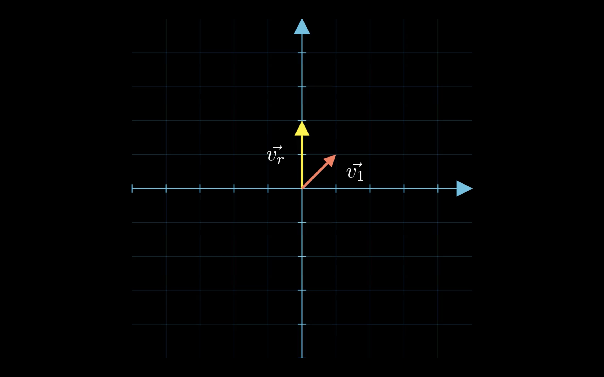
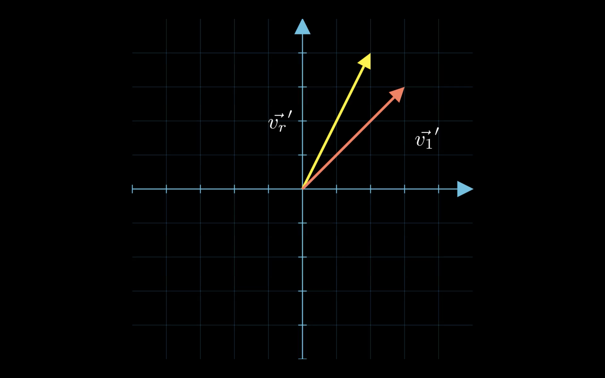

Unpacked: Eigenvalues & Eigenvectors
I’ve heard the terms eigenvalues and eigenvectors countless times, but if I’m being honest, I’ve never truly grasped their meaning. That’s kind of a bummer as they seem to appear everywhere from plain mathematics to machine learning which makes it feel like something worth understanding.
This is my attempt to break them down in a way that makes sense, not just mathematically but intuitively. Let’s start from the basics and build up from there.
Introduction
Let’s start with the basics:
- The eigenvalues of a matrix $A$ are obtained by solving the following equation $\text{det}(A-\lambda I) = 0$, called the characteristic equation, with $I$ the identity matrix, and $\lambda$ the variable representing the eigenvalues.
- The eigenvectors of $A$ are obtained by solving $A\bold{v} = \lambda \bold{v}$
What does it look like with a basic example ?
Take the following matrix:
$$ A = \begin{bmatrix} 2 & 1 \\ 1 & 2 \end{bmatrix} $$- We first compute $A - \lambda I$
-
Then, the determinant
$$ \text{det} \begin{bmatrix} 2 - \lambda & 1 \\ 1 & 2 - \lambda \end{bmatrix} = \lambda^2 - 4\lambda + 3 $$and its roots which gives us $\lambda_1 = 3$ and $\lambda_2 = 1$
-
Now we want to find $\bold{v_1}$ and $\bold{v_2}$ which happen to be
$$ \bold{v_1} = \begin{bmatrix} 1 \\ 1 \end{bmatrix}; \bold{v_2} = \begin{bmatrix} 1 \\ -1 \end{bmatrix} $$
You might be tempted to ask “But what does this actually look like ?”
| Before transformation | After transformation |
|---|---|
|  |  |
$\bold{v_1}$ is our initial eigenvector and $\bold{v_r}$ is a random vector. See what happens when we multiply both vector by our matrix $A$ ? Both vectors are scaled but only $\bold{v_r}$ rotated.
That’s it ! An eigenvector is a vector that, when multiplied by its corresponding matrix, has its direction unchanged (or reversed).
In truth, we should be talking about the eigenvalues and eigenvectors of a linear transformation $T$ which is more general than a mere matrix. We’ll keep our focus on matrices for now.
The intuition behind the characteristic equation
Great, now we understand a bit better what eigenvalues and eigenvectors represent. But why are eigenvalues the roots of this characteristic equation ?
Well, let’s approach our problem the other way around: We want to find a vector $\bold{v}$ that does not undergo rotation when multiplied by $A$. In other words we want to find: $A\bold{v} = \lambda \bold{v}$ We multiply $\bold{v}$ by a scalar $\lambda$ as we only care about rotations.
By rearranging the terms we find that this is equivalent to $\underbrace{(A - \lambda I)}_M\bold{v} = 0$
An obvious solution is the vector
$$\begin{bmatrix} | \\ 0 \\ | \end{bmatrix}$$(i.e., the trivial solution).
We do not care about this one, as it does not tell us anything about $A$, and therefore would like this equation to have non-zero solutions. In other words, we want $M$ to have singular matrix, that is to have no inverse (Because for any invertible matrix the linear transformation mapping $\bold{x}$ to $A \bold{x}$ is bijective). We know that a matrix is singular if and only if its determinant equals zero.
There we have it:
For $M\bold{v}$ to have non-zero solutions it must satisfy $\text{det}M = 0$.
As we wrap-up this introduction one might be tempted to ask what’s next. And I could not really blame them… I mean we just explained what eigenvalues and eigenvectors represent, how to compute them, and why does this computation actually makes sense.
However, think about it for a second, sure it’s cool to know that there exist vectors that, when a given linear transformation is applied to them, do not rotate. But isn’t there more to it ? Why would someone look for such a specific thing without further utility. To that I would answer that the mathematics have their reasons that reason ignores but if it was just for the sake of finding some mathematic bizarerie we would probably not find these two notions in fields like machine learning or physics.